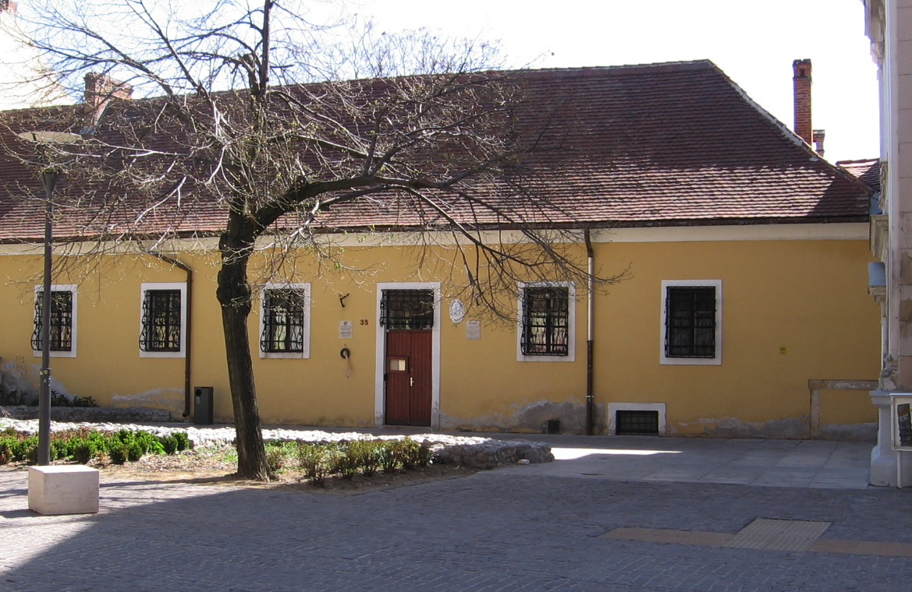

Köszöntjük a Collegium Seraphicum honlapján!
Kollégiumunk 1990-ben az országban elsőként nyitotta meg kapuit az egyházi felsőoktatási kollégiumok közül. Jelenleg közel száz keresztény egyetemista fiatalnak ad otthont 39 szobában, melyek kettő-, három személyesek. Intézményünk biztosítja a nyugodt tanulás, a hitbeli gyarapodás valamint a szabadidő kultúrált eltöltésének feltételeit. A kollégium épülete a város központjához közel, a történelmi belváros szélén helyezkedik el, ahonnan könnyen elérhetőek a PTE oktatási épületei. A lakók rendelkezésére áll ápolna, mely a nap huszonnégy órájában nyitva van bárki előtt. A lakók életét könyvtár, tanuló, társalgók, audiovizuális eszközökkel felszerelt tanterem, klub szoba ping-pong asztallal, belső zárt udvar és kerékpártároló segíti.
